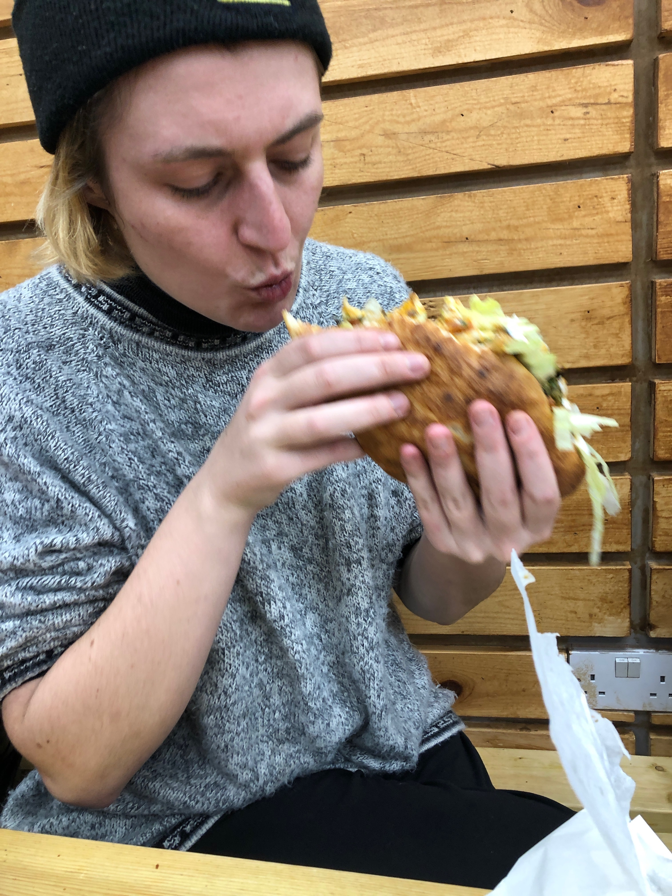

We went here to get a snack before going to see Cats (great film) at the cinema, and it was a really transcendent meal.
Gary and I shared a sandwich called a Sabich*, which consisted of a fried egg, roasted aubergine slices, salad, hummus and pickles, served on a soft flatbread. It was huge, soft and delicious: the aubergines were smoky and rich, the egg fried with some onions, and it came with a side of hot sauce that really brought the flavours out. The pickles were small and punchy.
We also shared a side of Qubbeh: spiced lamb mince wrapped in rice and deep fried. These were nicely spiced, and fresh, though rice casing was a little on the chewy side. These came with muhamarra, and an olive hummus that were both rich and really tasty.
Our friend Salik got a plate of curried chicken, which came with rice, salad, pickles and another set of small dips (a pomegranate sauce, another chilli sauce, and mayonnaise (I mistook this for yoghurt and tried to drink it)). The curry was light and savoury, and combined well with the rice, which was full of chopped, roasted nuts.
We also happened to have a bottle of wine in our bag, which they let us drink in the restaurant. Truly, paradise, and for less than £16. Highly recommended if you're ever hungry in Peckham
I really, really enjoyed the sandwich.
